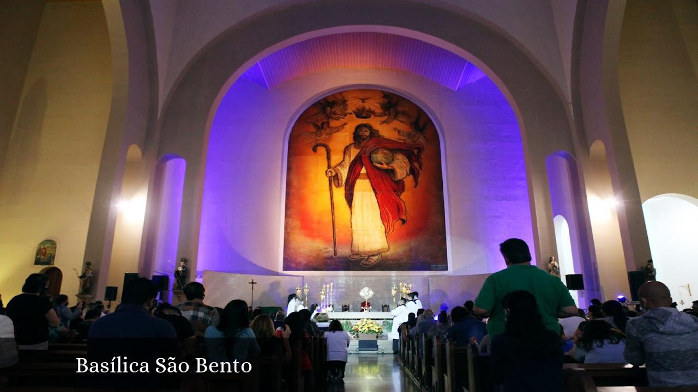

História e importância
A Basílica São Bento, localizada no centro de Araraquara, São Paulo, é um dos principais marcos históricos e culturais da cidade. Com uma arquitetura imponente e rica em detalhes, a igreja atrai visitantes e fiéis que buscam tanto a espiritualidade quanto o patrimônio histórico local.
A Basílica São Bento é um centro ativo de celebrações religiosas, incluindo missas diárias, batizados e casamentos. Além disso, oferece visitas guiadas para grupos e turistas interessados em conhecer sua história e arquitetura.
Em 14 de fevereiro de 2023, o Papa Francisco concedeu à Igreja Matriz de São Bento o título de Basílica Menor, reconhecendo sua importância histórica, cultural e religiosa. Essa elevação estabelece um vínculo especial com a Igreja Romana e o Papa, além de aumentar a visibilidade da Basílica no turismo religioso.
Origem
A cidade de Araraquara foi fundada por Pedro José Neto, que nasceu no ano de 1760. Em 1787, ele passou a morar em Itu, São Paulo. No entanto, em 1790, devido a problemas políticos com esta cidade, ele foi expulso dela e teria que morar em Piracicaba, porém conseguiu fugir para os Campos de Araraquara. Assim, em 1805, com seus dois filhos construiu uma capelinha destinada à São Bento, considerado o padroeiro nos Campos de Aracoara, lugar onde mora a luz do dia, a "Morada do Sol", na região habitada pelos indígenas.
Até 1816, os primeiros ocupantes da região tinham somente esta capelinha, da então Vila de São Bento de Araraquara, originalmente coberta de palha, com paredes de taipa. Seu primeiro Padre foi o vigário Francisco Manuel Malachias. Em frente a capela passava um córrego, que seria motivo de discórdia durante muitos anos por parte dos moradores.
Então, coube a Bento de Aguiar Barros, o Barão de Itu, caçador nos Campos de Araraquara, ajudar na criação de uma paróquia. Com a construção de uma capela, foi instituída por D. João VI a Freguesia de São Bento de Araraquara, ou seja, uma pequena povoação, em 22 de Agosto de 1817, data que passou a ser a da fundação da cidade. Assim, a Igreja Matriz de São Bento foi criada em 1817 por Dom Matheus Abreu Pereira.
Curiosidade
A Igreja Matriz de São Bento, em Araraquara, é a paróquia mais antiga da Diocese de São Carlos, sendo mais antiga que a própria diocese, tendo sido criada em 22 de agosto de 1817, data que também coincide com o aniversário da cidade. A igreja é considerada o marco zero de Araraquara, pois a capela que deu origem ao município e à paróquia foi construída nesse local. A igreja comporta 2 mil pessoas sentadas e um coro para 700 pessoas.

Estilo da Igreja
A igreja Matriz de São Bento tem o estilo Eclético Romano predominante em sua construção atual. Ele surgiu em uma escola holandesa na metade do século XVII. Como movimento artístico, ocorreu na arquitetura no século XIX. Por volta de 1840, na França, em reação à hegemonia do estilo greco-romano, os arquitetos começam a propor a retomada de outros modelos históricos como, por exemplo, o gótico e o românico.
A fachada da Igreja Matriz de São Bento é simples, com poucos ornamentos, com formas regulares, simétricas e geométricas e com abóbodas. Então, devido a essas características, ela está relacionada ao estilo arquitetônico neoclássico. Além disso, a presença da cúpula e do triângulo frontão também está relacionada a este estilo.
Lenda
O subsolo da Matriz de São Bento guarda muitas histórias, entre elas, a lenda da serpente que mora ali e não deixa as obras da igreja serem concluídas, provocando sempre novas rachaduras na parede. É uma história que passa de geração em geração sem nenhuma prova de que ela realmente existe, além do fato da reforma já estar completando 50 anos.
Diz a lenda que uma mulher teve um filho indesejado e o jogou no córrego que ficava em frente à Igreja Matriz de São Bento e depois foi canalizado. A criança se transformou numa serpente, que estaria vivendo no porão da igreja até os dias de hoje. Pelo dito popular, a cada vez que a serpente se mexe, ela derruba uma parte da igreja, a qual nunca fica pronta.
O padre Marcelo reconhece a importância da lenda popular, mas tem sua teoria para tantas rachaduras. Segundo ele, a igreja foi construída sobre sapatas, que é a parte inferior do alicerce e pode ser uma peça de madeira, metal ou concreto colocada sob o pilar que suporta o peso da construção. O problema é que aquela região central tem solo argiloso, até por consequência de ali ter um córrego, que foi canalizado. Por isso, a constante acomodação do solo argiloso é o que provoca certa movimentação no prédio e surgem as rachaduras.
| Tópico | Informação |
|---|---|
| Marco Zero | A igreja é considerada o ponto de partida da cidade, pois foi lá que a primeira capela foi construída, marcando o início do povoamento e da organização da cidade. |
| Fundador | Pedro José Neto, o fundador de Araraquara, está enterrado sob o altar da igreja. |
| Patrono | A igreja é dedicada a São Bento, padroeiro de Araraquara, e a data da sua festa é feriado municipal. |
| Acervo Histórico | A igreja possui um rico acervo de imagens e objetos religiosos com mais de 130 anos, incluindo uma relíquia de segundo grau do padroeiro, São Bento. |
| Elevada a Basílica Menor | Em 2023, a Igreja Matriz de São Bento foi elevada a Basílica Menor, recebendo um título de reconhecimento do Vaticano. |
📍 Localização e Contato
Endereço: Rua Padre Duarte, 1308 – Centro, Araraquara – SP
Diocese: Diocese de São Carlos
Telefone: (16) 3322-1535
E-mail: basilicasaobento@gmail.com
Informações práticas
Horário de funcionamento: Segunda a sexta, das 8h às 17h. Aos sábados, das 8h às 12h.
Entrada: Gratuita, com possibilidade de doações.
Regras: É proibido fazer barulho excessivo, entrar com alimentos ou bebidas dentro da igreja, ou realizar gravações sem autorização prévia.
📞 Contato para visitas monitoradas
Escolas e grupos interessados em visitas monitoradas podem agendar pelo telefone (16) 3322-1535 ou pelo e-mail basilicasaobento@gmail.com.